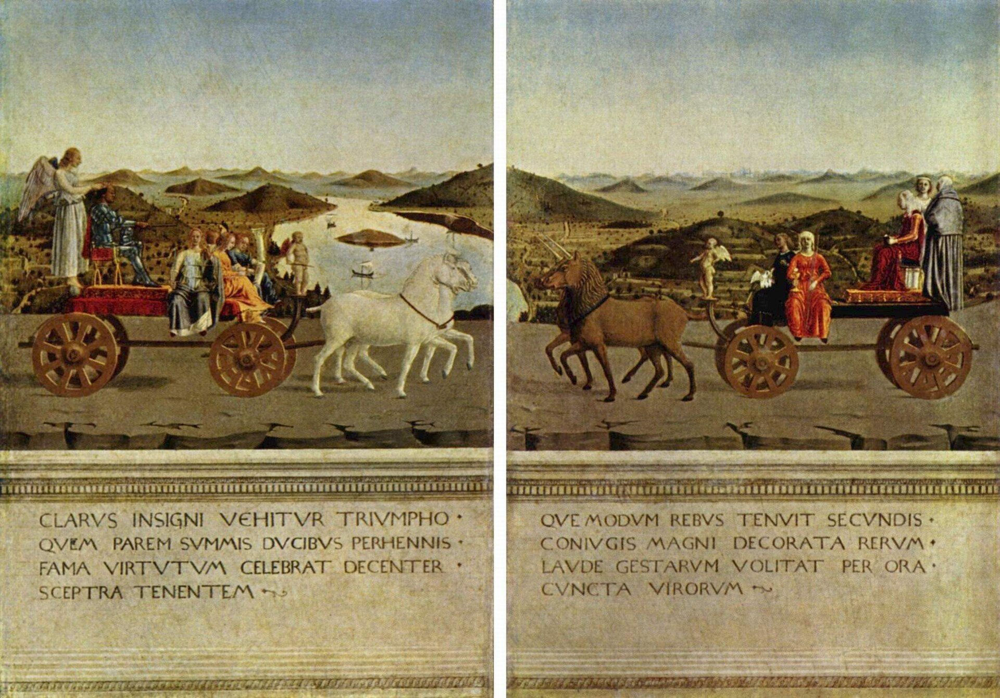

La lumière clarifie les formes
Les visages, les étoffes et les pierres restent lisibles. Dans le Baptême, la peau claire du Christ répond au tronc de l’arbre ; le paysage prolonge cette douceur lumineuse.
Piero della Francesca construit un monde de lumière et de géométrie, où les figures s’imposent et les récits gardent leur mystère.
Peintre de l’Italie centrale au XVe siècle, Piero fait de la géométrie une présence : des figures solides, une lumière claire, des gestes retenus. L’espace est rigoureux, mais les récits gardent leur mystère. Peintre et mathématicien, il donne au sacré une force calme, où un détail suffit à retenir le regard.
Un événement sacré devient une présence calme, dans un paysage de lumière.

Jean-Baptiste verse l’eau sur le Christ, immobile sous la colombe. Autour de lui, un homme retire sa tunique et des anges se donnent la main. Piero associe la solennité du sacré à des gestes proches de notre expérience.
À observer
Le premier repère est affiché. Cliquez sur les étapes pour changer de lecture, ou sur « Œuvre seule » pour masquer les traits.
L’ange couronné de roses entrouvre la bouche. La National Gallery y voit une réaction à la manifestation divine. À l’arrière-plan, les coiffures orientales ont aussi été rapprochées des visiteurs byzantins venus en Italie pour les conciles. Les gestes de concorde appartiennent à une lecture historique possible du tableau, sans résoudre tous ses détails.
Une scène de violence au loin, trois hommes tout près : l’espace les relie, mais leur histoire nous échappe.

Le Christ est flagellé au fond d’un édifice à l’antique. Trois hommes occupent le premier plan, dans un espace ouvert. Tout semble précisément construit, mais leur lien avec la violence de la scène reste une énigme.
À observer
Le premier repère est affiché. Cliquez sur les étapes pour changer de lecture, ou sur « Œuvre seule » pour masquer les traits.
Le lieu, la commande et l’identité des trois hommes restent discutés. Les rapprochements avec les Montefeltro et les enjeux religieux autour de Constantinople sont des hypothèses. L’espace couvert à gauche répond à l’espace ouvert à droite ; le Christ entouré fait écho au jeune homme encadré. Ces correspondances sont visibles, mais elles ne livrent pas une solution à l’énigme. Les reconstructions fondées sur le nombre d’or restent discutées.
Au-dessus des soldats endormis, le Christ se dresse et nous regarde.

La fresque se trouve dans l’ancien palais du gouvernement de Sansepolcro. Le Christ émerge du tombeau, un pied posé sur son bord. Au-dessous, quatre soldats dorment. La force de la scène vient de cette opposition entre relâchement et présence.
À observer
Le premier repère est affiché. Cliquez sur les étapes pour changer de lecture, ou sur « Œuvre seule » pour masquer les traits.
Sous une architecture majestueuse, le sacré et le pouvoir se rencontrent dans le silence.

La Vierge porte l’Enfant endormi, entourée de saints et d’anges. Cette réunion est appelée « Sainte Conversation », même si personne ne parle. Federico s’agenouille en armure ; un œuf suspendu rassemble autour de lui l’histoire sacrée et celle des Montefeltro.
À observer
Le premier repère est affiché. Cliquez sur les étapes pour changer de lecture, ou sur « Œuvre seule » pour masquer les traits.
L’architecture situe l’œuf dans la coquille au fond, tandis que son alignement nous le fait percevoir au-dessus de la Vierge. Une recension de L’Homme en perspective rapporte que Daniel Arasse étudie ce jeu d’illusion. La construction peut ainsi servir une expérience de dévotion, au-delà de la seule imitation du réel. Brera rapproche par ailleurs la commande de la naissance de l’héritier et de la mort de Battista Sforza en 1472, sans en faire une explication définitivement établie.
Deux profils face à face, un paysage qui les unit : le portrait devient une image du pouvoir et de la mémoire.


Recto · Les portraits
Le duc et la duchesse se regardent de profil, comme sur des monnaies antiques. Lui, au teint brun ; elle, très pâle, parée de bijoux. Le paysage se prolonge d’un panneau à l’autre et unit ces deux présences.
À observer
Le premier repère est affiché. Cliquez sur les étapes pour changer de lecture, ou sur « Œuvre seule » pour masquer les traits.
De l’autre côté, le prestige se met en scène. Le couple apparaît sur des chars de triomphe, accompagné de figures des vertus. Les inscriptions latines célèbrent ses qualités. Ces portraits ont donc deux faces : l’identité et l’éloge.
La pâleur de Battista est parfois rapprochée de sa mort en 1472. Il s’agit d’une lecture possible de l’image, pas d’une explication certaine de chaque choix pictural.
Retrouvez Federico da Montefeltro dans les portraits et dans la Sainte Conversation. Il est reconnaissable à son profil, mais sa place dans l’image change.
Une posture suffit ici à transformer la représentation d’un souverain. Deux images du pouvoir, avec deux intentions différentes.
Une lumière claire, des corps qui ont du poids, un monde soigneusement ordonné. Et cette impression que les personnages gardent quelque chose pour eux.
Les visages, les étoffes et les pierres restent lisibles. Dans le Baptême, la peau claire du Christ répond au tronc de l’arbre ; le paysage prolonge cette douceur lumineuse.
Les corps paraissent solides, presque sculptés. Le Christ de la Résurrection s’impose par sa présence droite, au-dessus des soldats repliés : peu de mouvement suffit à créer une grande force.
Axes, distances et architecture organisent les relations entre les figures. Dans la Flagellation, le Christ lointain et les trois hommes proches partagent un espace construit avec précision.
Les gestes sont souvent retenus, les expressions discrètes. Même la violence de la Flagellation ne transforme pas toute la scène en agitation. Cette réserve donne aux images leur silence particulier.
C’est la rencontre de ces indices qui aide à reconnaître Piero. La perspective ou les pieds nus, pris seuls, ne suffisent pas ; toutes ses œuvres n’offrent pas non plus les mêmes signes.
Œuvres de Piero della Francesca. Reproductions intégrales : Wikimedia Commons ; fichiers signalés comme domaine public. Les repères graphiques sont des aides pédagogiques ajoutées séparément, sans retoucher les images. Les datations peuvent varier selon les publications.
Les œuvres sont reproduites intégralement. Les interprétations discutées sont distinguées des observations ; les repères restent masquables.


.jpeg){kind=link}
_-_WGA17615.jpg){kind=link}